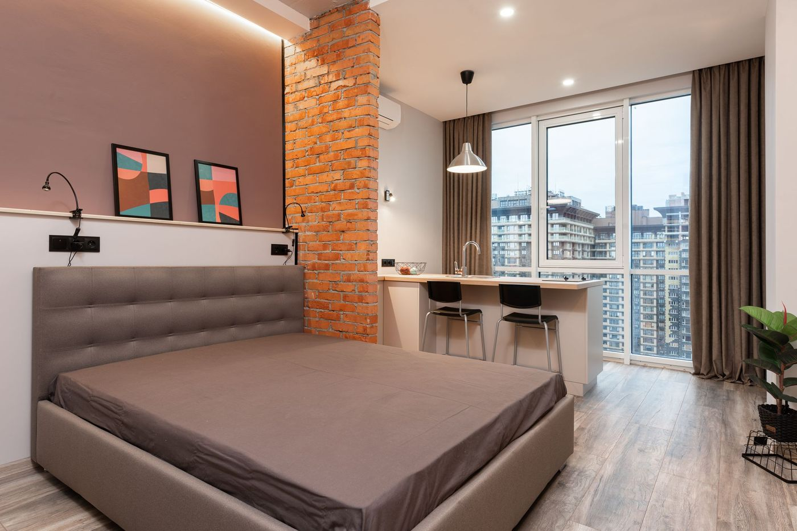

Niecała 11
Śródmieście, blisko Krakowskiego Przedmieścia
Dwa apartamenty w ścisłym centrum - 35 i 37 m², każdy dla maksymalnie czterech osób. Na Stare Miasto i do restauracji przy deptaku dojdziesz pieszo.
- klimatyzacja
- zmywarka, ekspres do kawy, mikrofalówka
- pralka
- bezpłatny parking
- zwierzęta mile widziane